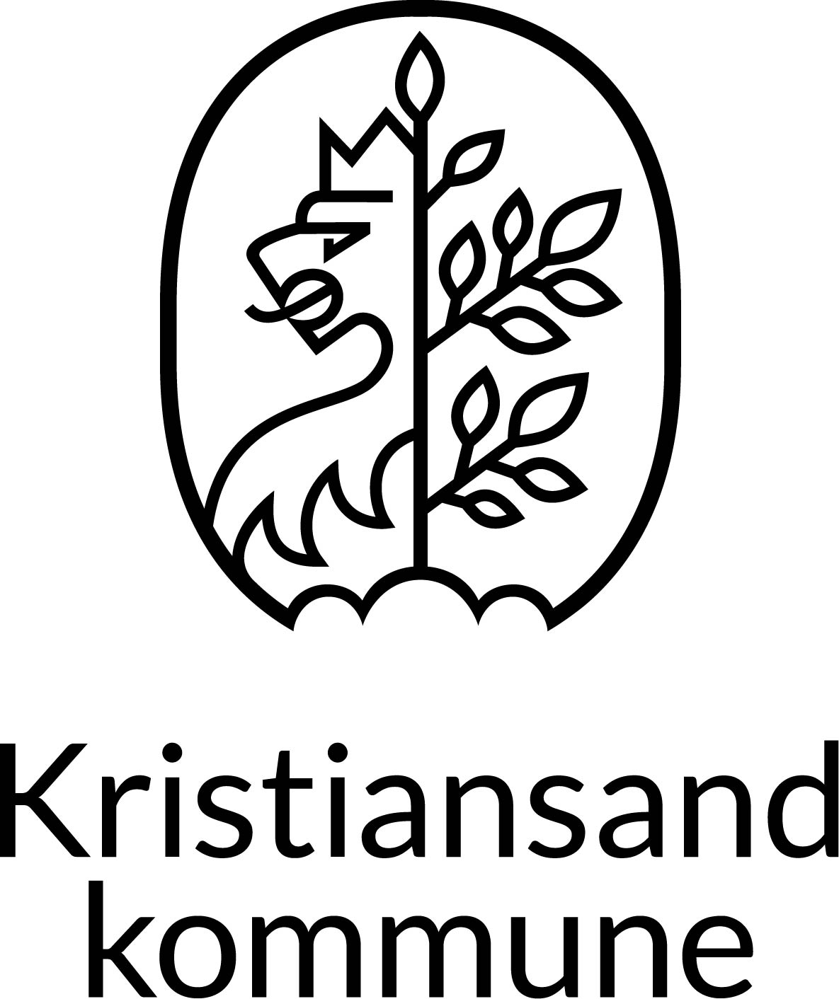
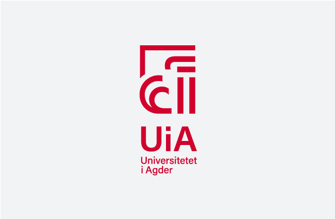
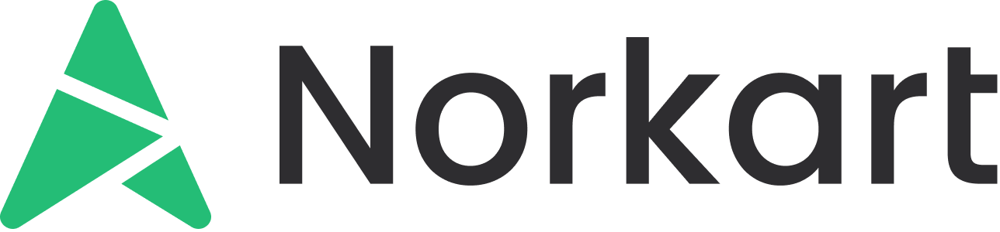
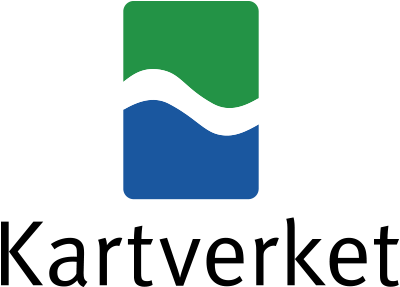
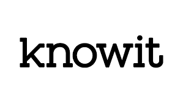
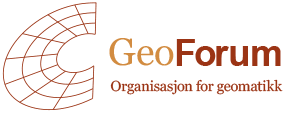
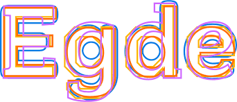

Hvem
Partnerskapet bak KartAI
Kristiansand Kommune har vært prosjekteier for innovasjonsprosjetet i offentlig sektor (IPO) med tett samarbeid med hovedsamarbeidspartnere.

Kristiansand Kommune
Prosjekteier

Universitetet i Agder
Akademisk partner

Norkart
Industripartner

Kartverket
Nasjonal partner
Gode venner og samarbeidspartnere



